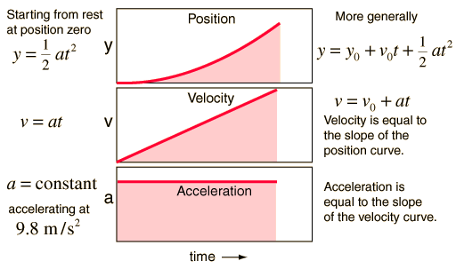
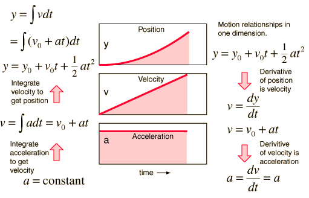

Constant Acceleration Motion Constant acceleration motion can be characterized by formuli and by motion graphs.
 Show development of formuli from calculus. |
Index Motion concepts | ||
|
Go Back |
Calculus Application for Constant Acceleration The motion equations for the case of constant acceleration can be developed by integration of the acceleration. The process can be reversed by taking successive derivatives.
 On the left hand side above, the constant acceleration is integrated to obtain the velocity. For this indefinite integral, there is a constant of integration. But in this physical case, the constant of integration has a very definite meaning and can be determined as an intial condition on the movement. Note that if you set t=0, then v = v0, the initial value of the velocity. Likewise the further integration of the velocity to get an expression for the position gives a constant of integration. Checking the case where t=0 shows us that the constant of integration is the initial position x0. It is true as a general property that when you integrate a second derivative of a quantity to get an expression for the quantity, you will have to provide the values of two constants of integration. In this case their specific meanings are the initial conditions on the distance and velocity. Show framework for time dependent acceleration. |
Index Motion concepts Velocity and acceleration | ||
|
Go Back |
Time Dependent Acceleration If the acceleration of an object is time dependent, then calculus methods are required for motion analysis. The relationships between position, velocity and acceleration can be expressed in terms of derivatives or integrals. Show constant acceleration case.Acceleration as polynomial in time. |
Index Motion concepts Velocity and acceleration | ||
|
Go Back |